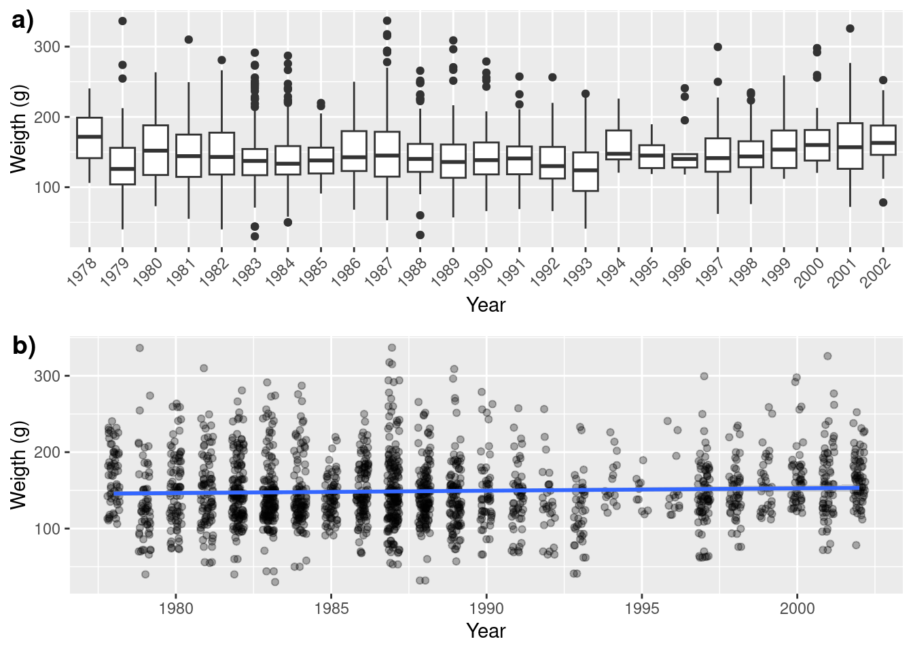
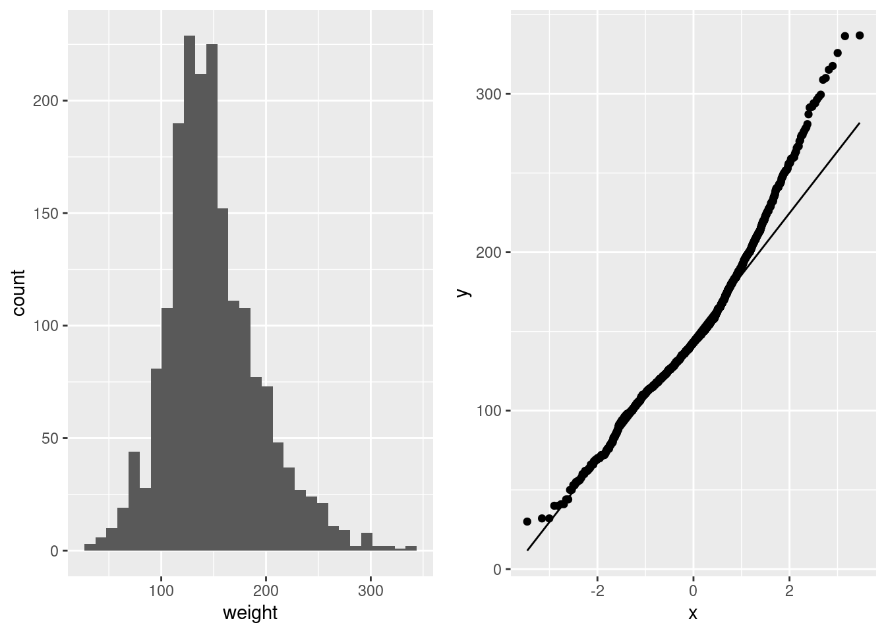
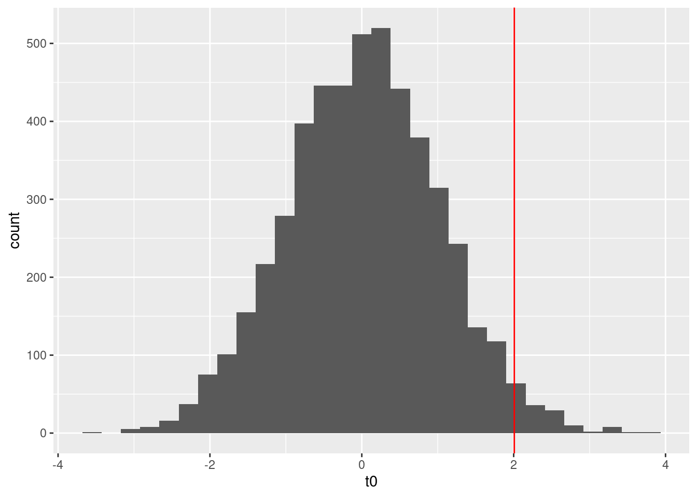
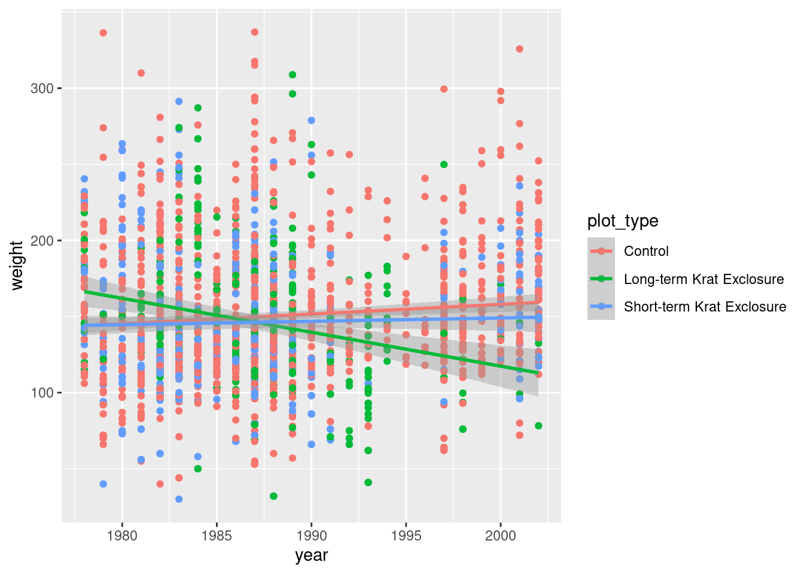

Randomization tests and bootstrap
This assignment must be submitted before February 3th at 5pm on Moodle.
Data
This lab uses the Portal database, which contains long-term monitoring data for several rodent species at a study site in Arizona.
Ernest, M., Brown, J., Valone, T. and White, E.P. (2018) Portal Project Teaching Database. https://figshare.com/articles/Portal_Project_Teaching_Database/1314459.
The portal_surveys.csv dataset contains one row per captured individual. Variables include the capture date (day, month, year), plot number, species code, sex, hindfoot length and weight of individuals.
library(tidyverse)## ── Attaching packages ─────────────────────────────────────── tidyverse 1.3.2 ──
## ✔ ggplot2 3.4.1 ✔ purrr 1.0.1
## ✔ tibble 3.1.8 ✔ dplyr 1.1.0
## ✔ tidyr 1.3.0 ✔ stringr 1.5.0
## ✔ readr 2.1.4 ✔ forcats 1.0.0
## ── Conflicts ────────────────────────────────────────── tidyverse_conflicts() ──
## ✖ dplyr::filter() masks stats::filter()
## ✖ dplyr::lag() masks stats::lag()library(boot)
library(cowplot)
library(permuco)
surveys <- read.csv("donnees/portal_surveysB.csv")
glimpse(surveys)## Rows: 36,701
## Columns: 10
## $ X <int> 1, 2, 3, 4, 5, 6, 7, 8, 9, 10, 11, 12, 13, 14, 15, 16,…
## $ record_id <int> 1, 2, 3, 4, 5, 6, 7, 8, 9, 10, 11, 12, 13, 14, 15, 16,…
## $ month <int> 7, 7, 7, 7, 7, 7, 7, 7, 7, 7, 7, 7, 7, 7, 7, 7, 7, 7, …
## $ day <int> 16, 16, 16, 16, 16, 16, 16, 16, 16, 16, 16, 16, 16, 16…
## $ year <int> 1977, 1977, 1977, 1977, 1977, 1977, 1977, 1977, 1977, …
## $ plot_id <int> 2, 3, 2, 7, 3, 1, 2, 1, 1, 6, 5, 7, 3, 8, 6, 4, 3, 2, …
## $ species_id <chr> "NL", "NL", "DM", "DM", "DM", "PF", "PE", "DM", "DM", …
## $ sex <chr> "M", "M", "F", "M", "M", "M", "F", "M", "F", "F", "F",…
## $ hindfoot_length <int> 32, 33, 37, 36, 35, 14, NA, 37, 34, 20, 53, 38, 35, NA…
## $ weight <dbl> NA, NA, NA, NA, NA, NA, NA, NA, NA, NA, NA, NA, NA, NA…The portal_plots.csv dataset indicates the type of treatment applied to each plot. The treatments are designed to exclude different types of rodents: “Control” = no fence, no exclusion; “Rodent Exclusion” = fence, all rodents excluded; “Krat Exclusion” = fence with a gate for small rodents, but not for kangaroo rats. These treatments were randomly assigned after setting up the plots.
plots <- read.csv("donnees/portal_plots.csv")
glimpse(plots)## Rows: 24
## Columns: 2
## $ plot_id <int> 1, 2, 3, 4, 5, 6, 7, 8, 9, 10, 11, 12, 13, 14, 15, 16, 17, 1…
## $ plot_type <chr> "Spectab exclosure", "Control", "Long-term Krat Exclosure", …1. Randomization tests
- First, we must prepare the data for analysis:
- In the
surveystable, keep only the observations from Néotoma albigula (NL) where the weight is not missing. Reminder: The functionis.na(x)checks ifxis a missing value.

Néotoma albigula
- Finally, join the
surveysandplotsdata frames and only keep plots of type “Long-term Krat Exclosure”,“Short-term Krat Exclosure”, and “Control”. to find out which plot treatment is related to each observation. You can use themergefunction in R or theinner_joinfunction, which requires the dplyr package. Name the resulting data framesurveys_plots.
surveys_plots= surveys %>% filter(!is.na(weight)) %>% filter(species_id=="NL") %>%
inner_join(plots) %>%
filter(plot_type %in% c("Long-term Krat Exclosure","Short-term Krat Exclosure","Control") )## Joining with `by = join_by(plot_id)`Next, view the distribution of the weight (in grams) of the individuals according to the year.
these 2 visualizations are equivalent. Some points to note:
1) I indicated the unit on the y-axis,
2) I adjusted the labels of the x-axis to make it readable (Fig a),
3) I added horizontal noise and transparency to the points (Fig b) to avoid masking overlapping points.
ga <- ggplot(surveys_plots,aes(x=as.factor(year),y=weight))+
geom_boxplot()+
labs(x="Year",y="Weigth (g)")+ # change le titre des axes
theme(axis.text.x = element_text(angle = 45,hjust = 1)) # texte en angle
gb <- ggplot(surveys_plots,aes(x=year,y=weight))+
geom_point(position = position_jitter(w=0.2), # ajoute du bruit sur la largeur
alpha=0.3)+ # ajuste la transparence
geom_smooth(method = "lm")+ # ajoute une droite de régression avec lm
labs(x="Year",y="Weigth (g)")
plot_grid(ga,gb, ncol=1,labels = c("a)","b)")) # combine les 2 figure
- We will use a randomization test based on linear regression to determine if the weight of captured individuals changes with year. Why do you think a permutation approach is appropriate? To do this, we will write a function that randomizes year, before running the lm.
The distribution of weight is non-normal and non-homogenious which could bias the estimates, their IC and the statistical tests. This can be seen on the histogram which has a long tail on the right and on the quantile graph where there is a deviation at the high values. we want a statistical test so a permutation is more appropriate than a bootstrap.
ga <- ggplot(surveys_plots,aes(x=weight))+geom_histogram()
gb <- ggplot(surveys_plots,aes(sample=weight))+geom_qq()+geom_qq_line()
plot_grid(ga,gb,ncol=2)## `stat_bin()` using `bins = 30`. Pick better value with `binwidth`.
- Create the function described in (b), which performs a randomization
of
year, performs an lm of the weight of individuals as a function of year, and then returns the value \(t\). Determine the distribution of this statistic for the null hypothesis with 4999 permutations. What is the \(p\) value for the observed \(t\) value if time has no effect on the mass of individuals captured?
mod1 <- lm(weight~year,data=surveys_plots)
summary(mod1)##
## Call:
## lm(formula = weight ~ year, data = surveys_plots)
##
## Residuals:
## Min 1Q Median 3Q Max
## -117.39 -29.00 -6.23 24.13 190.25
##
## Coefficients:
## Estimate Std. Error t value Pr(>|t|)
## (Intercept) -460.8480 303.6186 -1.518 0.1292
## year 0.3067 0.1527 2.008 0.0448 *
## ---
## Signif. codes: 0 '***' 0.001 '**' 0.01 '*' 0.05 '.' 0.1 ' ' 1
##
## Residual standard error: 44.3 on 1868 degrees of freedom
## Multiple R-squared: 0.002154, Adjusted R-squared: 0.00162
## F-statistic: 4.033 on 1 and 1868 DF, p-value: 0.04476t1 <- coef(summary(mod1))[2,3]
permufun <- function(){
surv_perm <- surveys_plots %>% mutate(year_perm=sample(surveys_plots$year))
mod0 <- lm(weight~year_perm,data=surv_perm)
t0=coef(summary(mod0))[2,3]
return(t0)
}
nperm=4999
t0 <- replicate(nperm,permufun())
pv= (sum(abs(t0) >= abs(t1)) + 1) / (nperm + 1)
ggplot()+geom_histogram(aes(x=t0))+geom_vline(xintercept = t1,color="red")## `stat_bin()` using `bins = 30`. Pick better value with `binwidth`.
The mass decline seems to be significant. Indeed, with an observed t-value of
2.008, we obtain a p-value of0.04following the permutation. This is in line with the value of p reported by the linear regression which was0.045.
# Bonus point:
# This permutation does not respect the annual data structure
# because it does not keep the individuals of the same year together
# this problem can be solved by changing the resampling to keep them together
# A mixed linear model would also have been better, but we are not there yet.
permufun_BONUS <- function(){
permu <- data.frame(year=unique(surveys_plots$year),
year_perm=sample(unique(surveys_plots$year)))
surv_perm <- surveys_plots %>% left_join(permu,by="year")
mod0 <- lm(weight~year_perm,data=surv_perm)
t0=coef(summary(mod0))[2,3]
return(t0)
}
t0b <- replicate(nperm,permufun_BONUS())
(sum(abs(t0b) >= abs(t1)) + 1) / (nperm + 1)## [1] 0.2214# The decline is not REALLY significant
# this permutation takes into account the non independance of years
# a little like if we had done a mixed effect model
# the p values of which are somewhat similar
#(note that p values are not reported in lmer for good resasons. this is only an approximation)
library(lme4)## Loading required package: Matrix##
## Attaching package: 'Matrix'## The following objects are masked from 'package:tidyr':
##
## expand, pack, unpacklmm <- lmer(weight~year+(1|year),data=surveys_plots)
coef(summary(lmm))## Estimate Std. Error t value
## (Intercept) -504.699755 560.121193 -0.9010546
## year 0.328677 0.281576 1.1672765dt(coef(summary(lmm))["year","t value"], nrow(surveys_plots)-3)## [1] 0.2018045- Is the difference significant with a threshold \(\alpha = 0.01\)?
no, the probability to obtain the observed t value by chance (the null hypothesis) is > 0.01
- Perform a new randomization test to check if the decline in mass differs between treatments.(ie. if there is an interaction between year and plot_type)
ggplot(data = surveys_plots,aes(x=year,y=weight,color=plot_type))+
geom_point()+
geom_smooth(method = "lm")
res=lmperm(weight~year*plot_type,data=surveys_plots)
res$table[,-c(3,5,6)]##
##
## Estimate Std. Error
## (Intercept) -1116.1640 373.9887
## year 0.6371 0.1881
## plot_typeLong-term Krat Exclosure 5685.8430 1068.7573
## plot_typeShort-term Krat Exclosure 823.8891 715.2799
## year:plot_typeLong-term Krat Exclosure -2.8632 0.5378
## year:plot_typeShort-term Krat Exclosure -0.4164 0.3599
## parametric Pr(>|t|) resampled Pr(>|t|)
## (Intercept) 0.0028774959
## year 0.0007200466 0.0010
## plot_typeLong-term Krat Exclosure 0.0000001162 0.0002
## plot_typeShort-term Krat Exclosure 0.2495339367 0.2494
## year:plot_typeLong-term Krat Exclosure 0.0000001141 0.0002
## year:plot_typeShort-term Krat Exclosure 0.2474389604 0.2464this test suggests that interaction is very important. Indeed, the interaction between the year and the long-term exclosure site is significant (pv=
0), suggesting that the weight decreases more rapidly in this site than in the control site.
# the lmperm function, although very useful, does not offer much flexibility.
# if we want to continue to maintain the annual structure of the years,
# the permutation must be calculated by hand
# this may be difficult to do if we want to maintain
# covariance between explanatory variables. Fortunately, the site types and
# year are biologically and methodologically independent.
mod2 <- lm(weight~year*plot_type,data=surveys_plots)
t2 <- coef(summary(mod2))[,3]
permufun2_BONUS <- function(){
permu <- data.frame(year=unique(surveys_plots$year),
year_perm=sample(unique(surveys_plots$year)))
surv_perm <- surveys_plots %>% left_join(permu,by="year")
mod0 <- lm(weight~year_perm*plot_type,data=surv_perm)
t0=coef(summary(mod0))[,3]
return(t0)
}
t0c <- replicate(nperm,permufun2_BONUS())
pv <- (sapply(1:length(t2), function(x) sum(abs(t0c[x,]) >= abs(t2[x]))) + 1) / (nperm + 1)
lmm2 <- lmer(weight~year*plot_type+(1|year)+(1|plot_id),data=surveys_plots)
cbind(coef(summary(mod2)),pv_perm=pv,
pv_lmm=round(dt(coef(summary(lmm2))[,"t value"],nrow(surveys_plots)-8),5)
)## Estimate Std. Error t value
## (Intercept) -1116.1639891 373.9886501 -2.984486
## year 0.6370609 0.1880634 3.387480
## plot_typeLong-term Krat Exclosure 5685.8430099 1068.7573330 5.320051
## plot_typeShort-term Krat Exclosure 823.8891053 715.2799495 1.151841
## year:plot_typeLong-term Krat Exclosure -2.8631983 0.5378367 -5.323546
## year:plot_typeShort-term Krat Exclosure -0.4164000 0.3599102 -1.156955
## Pr(>|t|) pv_perm pv_lmm
## (Intercept) 0.002877495914 0.0970 0.28899
## year 0.000720046630 0.0490 0.22993
## plot_typeLong-term Krat Exclosure 0.000000116241 0.0182 0.00024
## plot_typeShort-term Krat Exclosure 0.249533936671 0.4804 0.28722
## year:plot_typeLong-term Krat Exclosure 0.000000114061 0.0176 0.00025
## year:plot_typeShort-term Krat Exclosure 0.247438960391 0.4802 0.287962. Bootstrap
- Calculate the 99% confidence interval for the change in mass of the different treatments.
lm_time <- function(dat, i) {
mod <- lm(weight~year*plot_type,data=dat[i,])
c(coef(mod),
penteShortExclo=coef(mod)[2]+coef(mod)[6],
penteLongExclo=coef(mod)[2]+coef(mod)[5])
}
boot_hab <- boot(surveys_plots, lm_time, R = 10000)
# however, it is better to stratify by plot_id to make sure we keep a
#balance in the the representitivity of each site in the resampling
boot_hab <- boot(surveys_plots, lm_time,R = 10000,
strata = as.factor(surveys_plots$plot_id ))
# confidance interval for the interaction between year and long term exclosure
boot.ci(boot_hab,index = 5,type = "bca",conf = 0.99)## BOOTSTRAP CONFIDENCE INTERVAL CALCULATIONS
## Based on 10000 bootstrap replicates
##
## CALL :
## boot.ci(boot.out = boot_hab, conf = 0.99, type = "bca", index = 5)
##
## Intervals :
## Level BCa
## 99% (-4.104, -1.687 )
## Calculations and Intervals on Original Scale# condidence interval for the effect of year on weigth for the control site
boot.ci(boot_hab,index = 2,type = "bca",conf = 0.99)## BOOTSTRAP CONFIDENCE INTERVAL CALCULATIONS
## Based on 10000 bootstrap replicates
##
## CALL :
## boot.ci(boot.out = boot_hab, conf = 0.99, type = "bca", index = 2)
##
## Intervals :
## Level BCa
## 99% ( 0.1435, 1.1436 )
## Calculations and Intervals on Original Scale# condidence interval for the effect of year on weigth for the short term exclosure
boot.ci(boot_hab,index = 7,type = "bca",conf = 0.99)## BOOTSTRAP CONFIDENCE INTERVAL CALCULATIONS
## Based on 10000 bootstrap replicates
##
## CALL :
## boot.ci(boot.out = boot_hab, conf = 0.99, type = "bca", index = 7)
##
## Intervals :
## Level BCa
## 99% (-0.4844, 0.9512 )
## Calculations and Intervals on Original Scale# condidence interval for the effect of year on weigth for the long term exclosure
boot.ci(boot_hab,index = 8,type = "bca",conf = 0.99)## BOOTSTRAP CONFIDENCE INTERVAL CALCULATIONS
## Based on 10000 bootstrap replicates
##
## CALL :
## boot.ci(boot.out = boot_hab, conf = 0.99, type = "bca", index = 8)
##
## Intervals :
## Level BCa
## 99% (-3.375, -1.103 )
## Calculations and Intervals on Original Scale- Is the confidence interval obtained in a) consistent with the test result in 1.e)? Does the bootstrap accurately represent the sampling process for this problem? > Yes, the CIs are in line with the randomization test 1e.
In part, the bootstrap is representative of the sample if it was done in a stratified way. Otherwise, it could have been stratified. Stratification by site-year would also have been appropriate. However, the bootstrap is based on a linear regression and therefore suffers from pseudo-replication problems. A mixed model approach might have been better overal.
- Use the bootstrap method with 10,000 replicates to calculate the difference in weight of individuals between the start and the end of the study for the “Long-term Krat Exclosure” and “Control” treatments. Perform bias correction and report the corrected difference with its standard error.)
diffBootFun <- function(dat,i){
booted <- dat[i,]
mean(booted$weight[booted$year==max(booted$year)])-mean(booted$weight[booted$year==min(booted$year)])
}
dat_ex <- surveys_plots %>% filter(plot_type=="Long-term Krat Exclosure") %>% filter(year %in% range(year))
dat_ctrl <- surveys_plots %>% filter(plot_type=="Control") %>% filter(year %in% range(year))
boot_ex <- boot(dat_ex,diffBootFun,strata = as.factor(dat_ex$plot_id), R = 10000)
# Biais
bias_ex <- mean(boot_ex$t) - boot_ex$t0
corrected <- boot_ex$t0-bias_ex
# Erreur-type
se_ex <- sd(boot_ex$t)
print(paste("the change in weigth between the start and end of the study for the control is",corrected))## [1] "the change in weigth between the start and end of the study for the control is -52.9077354115781"print(paste("the standard error is",se_ex))## [1] "the standard error is 20.9752332935793"boot_ctrl <- boot(dat_ctrl,diffBootFun,strata = as.factor(dat_ctrl$plot_id),R = 10000)
bias_ctrl <- mean(boot_ctrl$t) - boot_ctrl$t0
correctedctrl <- boot_ctrl$t0-bias_ctrl
# Erreur-type
se_ctrl <- sd(boot_ctrl$t)
print(paste("the change in weigth between the start and end of the study for the long term exclosure is",correctedctrl))## [1] "the change in weigth between the start and end of the study for the long term exclosure is 6.73491677724411"print(paste("the standard error is",se_ctrl))## [1] "the standard error is 7.19758929251067"evaluation grid
| q | element | point |
|---|---|---|
| 1a | got data frame with 1870 rows | 0.5 |
| 1a | got data frame with 643 rows | 0.25 |
| 1a | made a figure showing weight~year | 0.25 |
| 1a | figure had units and no overlap hiding points | 0.25 |
| 1b | mention non-normality or non-homogeneity | 0.33 |
| 1b | a figure or test to show it | 0.33 |
| 1b | permutation for testing | 0.33 |
| 1c | made the wright permutation function | 0.5 |
| 1c | made a working permutation function | 0.25 |
| 1c | properly calculated p-value | 0.5 |
| 1c | * bonus: thinks about data structure and year* | 1 |
| 1d | no | .5 |
| 1e | modeled the year*plot_type | 0.5 |
| 1e | used lmperm | 0.5 |
| 2a | used the previous model | .17 |
| 2a | used a bootstrap to get CI | 0.17 |
| 2a | got CI for 3 slopes | 0.17 |
| 2b | yes consistent | 0.5 |
| 2b | talk about non-independance | 0.5 |
| 2c | correct bootstrap | 0.5 |
| 2c | correct formula for bias, se, and the correction | 0.5 |